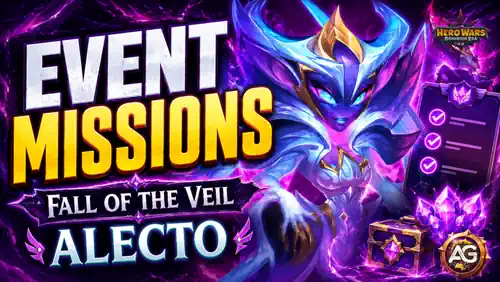

Fall of the Veil introduces Alecto through a chapter-based Titan event with two connected mission sets: the main Fall of the Veil quests and the Alecto-focused Rift Huntress progression quests. The event rewards preparation much more than impulsive spending because battle progress, Emerald objectives, Titan development, chapter resets, and Sapphire Medallion purchases all overlap.
This guide lists every mission threshold supplied for the event, then turns that raw checklist into a practical route. Use it to decide what to save, which upgrades to delay until the event is live, and where your Sapphire Medallions create the most lasting account value.

There are three currencies or progress layers to watch at the same time: chapter Energy, Valor Coins, and Sapphire Medallions. Chapter resets regenerate the coins placed in the Hero Stall, so resets are also opportunities to test different teams and make another set of stall purchases. Some heroes only appear in the later battles of a chapter, which means the full stall roster is not available immediately.
Alexandre's main recommendation: improve the Tome before spending heavily on the other event Relics. A stronger Tome increases the Valor Coin flow and makes later chapter progress more efficient. Plan the upgrade order before committing limited event resources.
Data status: the supplied mission list includes every objective threshold, but individual quest reward quantities are still marked as unknown. This guide does not invent those rewards. Chapter, shop, pass, and conversion quantities are shown where they were available.
There is no responsible fixed answer before all event gifts, bundles, and live chapter requirements are visible. Active free players should be able to make meaningful chapter progress, while the final chapter and its Distorted Spirit Summoning Sphere may require additional paid resources depending on the final event economy. Wait long enough to see the gifts and real prices before buying, but start the battles early enough to avoid running out of time.
The main event contains eight quest chains. Complete the free and repeatable objectives first, then decide whether the Emerald, VIP, stall, or Development Shop chains fit your budget. All milestones below are cumulative unless the game interface states otherwise.
Win battles inside Fall of the Veil. The final listed objective requires 71 victories, so spread your attempts across the event and avoid a last-day grind.
| Objective | Milestones | Reward Status |
|---|---|---|
| Total Fall of the Veil victories | 1, 2, 3, 5, 7, 10, 13, 17, 21, 26, 31, 37, 43, 50, 57, 64, 71 | Not yet confirmed |
This is a purchase chain, not an Emerald-spending chain. Only bought Emeralds count toward these thresholds.
| Objective | Milestones | Planning |
|---|---|---|
| Emeralds purchased | 100, 300, 1,000, 2,500, 5,000, 10,000, 15,000, 25,000, 40,000, 60,000, 90,000, 120,000 | Paid progression; stop at the tier that matches your existing budget. |
Emerald spending can overlap with other account goals. Prioritize actions that also advance Titan development, event Energy, or another active event rather than spending only to move this counter.
| Objective | Milestones | Maximum |
|---|---|---|
| Emeralds spent | 100, 500, 3,000, 7,000, 12,000, 18,000, 25,000, 35,000, 50,000, 70,000, 90,000, 120,000, 150,000 | 150,000 Emeralds |
Collect stall fragments until each featured hero reaches maximum rank. Later chapter stages may be required before every hero becomes available.
| Source | Maximum-Rank Hero Targets | Count |
|---|---|---|
| Hero Stall fragments | Orion, Polaris, Fluffy, Yasmine, Qing Mao, Dorian, Chabba | 7 objectives |
Pet purchases are counted across all chapter playthroughs. The ten listed milestones are one purchase apart, so every pet bought advances exactly one tier.
| Objective | Milestones | Scope |
|---|---|---|
| Buy any pet from the Hero Stall | 1, 2, 3, 4, 5, 6, 7, 8, 9, 10 purchases | Total purchases across every playthrough |
| Objective | Milestones | Maximum |
|---|---|---|
| VIP Points earned during the event | 500, 1,000, 1,500, 2,000, 2,500, 3,000, 3,500, 4,000, 4,500, 5,000, 6,000, 7,000 | 7,000 VIP Points |
These objectives ask you to collect Development Shop fragments until the specified Titan, paired Titan entry, or Influence Skill reaches maximum rank. Check what is already close to completion before spending shop currency; the cheapest finish is often better than starting a new target from zero.
| Group | Maximum-Rank Targets |
|---|---|
| Fire Titans | Moloch, Vulcan, Ignis, Araji |
| Earth Titans | Angus, Sylva, Avalon, Eden |
| Dark Titans | Brustar, Keros, Mort, Tenebris |
| Event Titan entries | Alecto; Valdur and Echo; Umbra and Caligo; Tidus and Gelo; Verdoc and Phyto; Asherona and Pyro |
| Influence Skills | Star Dust, Gravitational Anomaly, Nova Flare, Dark Matter, Main Sequence, Dreamveil, The Depths Whisper, Murmur of the Crags, Triple Cycle, Call of Elements |
Every purchase in the event shop costs one Sapphire Medallion, so this chain also measures how many shop transactions you complete.
| Objective | Milestones | Maximum |
|---|---|---|
| Sapphire Medallions spent | 3, 6, 10, 20, 30, 40, 50, 60, 70, 80, 90, 100 | 100 Medallions |
Rift Huntress rewards direct investment in Alecto. Save Titan Potions, Titan Skin Stones, Artifact Essence, Artifact Fragments, and evolution resources before the event if you want to clear these chains efficiently. Upgrades completed too early cannot be counted retroactively unless the event rules explicitly say so.
| Objective | Milestones |
|---|---|
| Level up Alecto | 20, 40, 60, 80, 100 total level-ups |
| Evolve Alecto | Reach 6 stars |
| Objective | Skin-Level Milestones |
|---|---|
| Upgrade Alecto's Default Skin | Level 5, 10, 20, 30, 40, 50, 60 |
| Artifact | Star Milestones |
|---|---|
| Zorval's Wing | 2, 3, 4, 5, and 6 stars |
This chain counts the combined artifact levels gained by Alecto. There are 14 thresholds, ending at 360 levels across her Titan Artifacts.
| Objective | Total Artifact Levels Gained |
|---|---|
| Upgrade Alecto's Titan Artifacts | 12, 24, 42, 60, 90, 120, 150, 180, 210, 240, 270, 300, 330, 360 |
This is the meta-chain for completing other Rift Huntress missions. Claim each reward as soon as it unlocks so you can immediately reuse any development resources it returns.
| Objective | Completed Rift Huntress Quests |
|---|---|
| Complete special-event quests | 16, 19, 22, 25, 28, 31, 34, 37, 40, 43, 46 |
Each chapter grants three headline rewards. The supplied data currently shows “Relic Level 1” and “0 Energy” beside every chapter; those values look like provisional interface data, so they are not treated as final chapter costs here.
| Chapter | Reward 1 | Reward 2 | Reward 3 |
|---|---|---|---|
| I | 50,000 Essence of the Elements | 10,000 Valor Coins | 1 Sapphire Medallion |
| II | 30 Large Skin Stone Chests | 20,000 Valor Coins | 2 Sapphire Medallions |
| III | 25,000 Titan Skin Stones | 20,000 Valor Coins | 2 Sapphire Medallions |
| IV | 20,000 Valor Coins | 2 Sapphire Medallions | 150 Primal Catalysts |
| V | 50,000 Valor Coins | 10 Sapphire Medallions | 100 Elemental Catalysts |
| VI | 50,000 Valor Coins | 10 Sapphire Medallions | 1 Gift of Dominion |
| VII | 1 Distorted Spirit Summoning Sphere | 50,000 Valor Coins | 10 Sapphire Medallions |
Total chapter headline rewards: 220,000 Valor Coins and 37 Sapphire Medallions, plus the chapter-specific resources listed above. Treat Chapter VII as the premium target because its Distorted Spirit Summoning Sphere is the standout reward.
Shopkeeper Wendy exchanges one Sapphire Medallion for each listed offer. Alecto-specific Artifact Fragments should normally come before generic materials because the event is the most direct opportunity to build the new Titan. After that, choose resources that solve a real bottleneck on your account.
| Offer for 1 Sapphire Medallion | Quantity | My Priority |
|---|---|---|
| Zorval's Wing Fragments | 500 | Very High - Alecto-specific Weapon progress |
| Distorted Attack Seal Fragments | 500 | Very High - direct Titan Artifact progress |
| Crown of Distortion Fragments | 500 | Very High - direct Titan Artifact progress |
| Echo of Change | 250 | High - event development material |
| Titan Potions | 20,000 | Medium - useful for Birth of Will |
| Essence of the Elements | 40,000 | Medium - useful for Elemental Forge |
| Titan Skin Stones | 15,000 | High - supports Manifestation of Form |
| Lesser Hero Soul Stone Chest | 1 | Medium - flexible hero progress |
| Chaos Particles | 700 | Medium - valuable when pet development is blocked |
| Large Skin Stone Chests | 20 | Medium - flexible hero skin resources |
| Great Enchantment Runes | 50 | Medium - broad glyph progress |
| Huge EXP Potions | 300 | Low - easy to replace later |
| Bottled Energy | 15 | Medium - useful for overlapping Energy events |
| Flawless Artifact Chests | 60 | Medium - flexible hero Artifact resources |
| Hand of Glory | 10 | Situational |
| Minotaur's Head | 10 | Situational |
| Giant-Slayer | 10 | Situational |
| La Mort's Card | 2 | Situational |
| Flaming Heart | 10 | Situational |
| Trine | 3 | Situational |
| Lycanthrope's Fang | 2 | Situational |
| Alchemist's Set | 2 | Situational |
| Aigrette of Nocturnal Cicadas | 1 | Situational |
| Evening Curfew | 1 | Situational |
| Dragon's Heart | 1 | Situational |
Simple buying rule: secure the Alecto Artifact Fragments you actually need, then buy Titan Skin Stones or event development materials, and only use leftover Medallions on generic hero gear. Equipment is worthwhile only when it immediately completes an item for a hero you actively use.
The Altar of Fate appears as part of the event, but its rewards, odds, and spending rules were not included in the available data. Do not reserve a fixed amount of currency for it until the live interface confirms what it accepts and what it can award. This section should be updated once those values become available.
The pass price and any instant reward granted at purchase were not included in the available data. The table below lists the track contents that were available, without assigning an unconfirmed price or claiming an unknown purchase bonus.
| Reward | Free Track | Paid Track |
|---|---|---|
| Avatar | — | Player Avatar #1743 |
| Energy Crystals | 40 | 150 |
| Sapphire Medallions | 4 | 20 |
| Emeralds | 2,000 | 10,000 |
| Explorer's Moves | 4 | 40 |
| Zorval's Wing Fragments | 200 | 1,000 |
| Distorted Attack Seal Fragments | 200 | 1,000 |
| Titan Skin Stones | 4,000 | 20,000 |
| Essence of the Elements | 30,000 | 150,000 |
| Titan Potions | 12,000 | 60,000 |
| Titan Artifact Spheres | 75 | 375 |
| Bottled Energy | 2 | 10 |
| Gold | 6,000,000 | 30,000,000 |
| Summoning Spheres | 15 | 75 |
| Titan Resource Chests | 1 | 5 |
The track uses Glory Points, which are listed as non-giftable. Evaluate the paid track only after its live price and any immediate purchase package are visible in your game client.
Unused event resources convert into Titan Resource Chests. Directly spending useful currency is generally better than accepting forced conversion, especially because the event shop disappears.
| Remaining Event Resource | Conversion |
|---|---|
| 1 Sapphire Medallion | 10 Titan Resource Chests |
| 3 Energy Crystals | 1 Titan Resource Chest |
| 1,500 Valor Coins | 1 Titan Resource Chest |
| 20 Buffs | 1 Titan Resource Chest |
| 2 Amulet Levels | 1 Titan Resource Chest |
| 1 Tome or Grail Level | 1 Titan Resource Chest |
Spend before the handoff: the supplied event notes state that Valor Coins, Sapphire Medallions, Energy, and event Relics reset before Valdur's event begins. Review your inventory before the timer expires and use valuable shop currency deliberately.
Fall of the Veil is not a single-resource event. The efficient route connects battle wins, chapter resets, Hero Stall purchases, Development Shop completions, Alecto upgrades, and Medallion spending so the same investment advances several objectives. Players building Alecto should prioritize her unique Artifact Fragments and save the required Titan resources in advance. Players who are not committing to her can still extract strong value from chapter rewards, the free Path, and carefully selected shop offers.
The most important mistake to avoid is leaving event-only currency unused. Plan early, watch for gifts, finish the time-consuming battles before the last day, and perform a final inventory check before the event converts resources and removes Wendy's shop.
Did this Alecto event missions guide help you plan Fall of the Veil? Which chapter are you targeting, and what will you buy with your Sapphire Medallions? Join the Alexandre Games Blog comments to share your route, questions, and corrections.
Click the button below to get started: